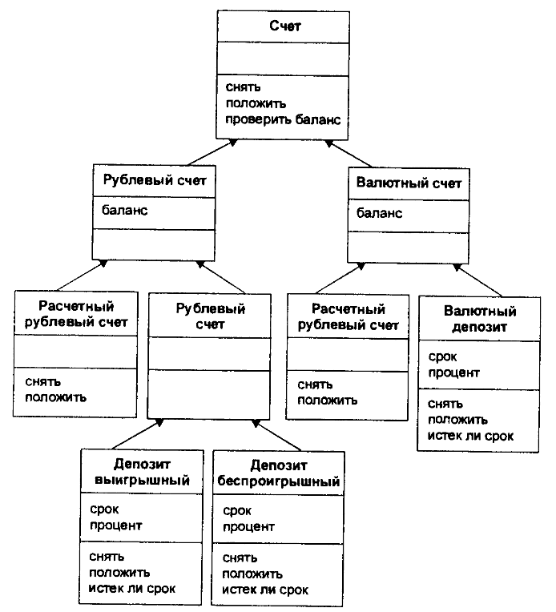
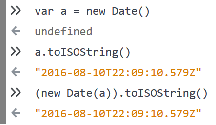
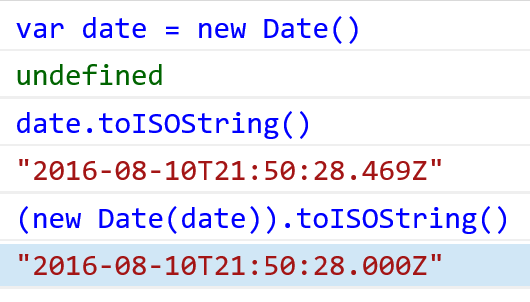

{
Тема: Как перестать писать код с ошибками,
Спикер: Владимир Дашукевич,
Компания: XBSoftware,
Конференция: FrontTalks
}

Мы пишем код с багами(



Мы не виноваты
Причины ошибок
Ограниченность видимости
var isActive = true,justDoIt = function () {if (isActive) {alert("it's done!")}var elt = document.createElement("A");// ...
Hoisting
var isActive = true,justDoIt = function () {if (isActive) {alert("it's done!")}var elt = document.createElement("A");// ...
var isActive = true,justDoIt = function () {if (isActive) {alert("it's done!")}var elt = document.createElement("A");// ...
var isActive = true,justDoIt = function () {if (isActive) {alert("it's done!")}var elt = document.createElement("A");// ...
var isActive = true,justDoIt = function () {if (isActive) {alert("it's done!")}var elt = document.createElement("A");// ...
var isActive = true,justDoIt = function () {if (isActive) {alert("it's done!")}var elt = document.createElement("A");var isActive;
var isActive = true,justDoIt = function () {if (isActive) {alert("it's done!")}var elt = document.createElement("A");var isActive;
var isActive = true,justDoIt = function () {var elt, isActive;if (isActive) {alert("it's done!")}elt = document.createElement("A");isActive;
var isActive = true,justDoIt = function () {var elt, isActive;if (isActive) {alert("it's done!")}elt = document.createElement("A");isActive;
Что делать?
- Code review
- Линтеры
- ES2015
Code review

Правила
- Только один var
- var в начале функции
Code review
Линтеры
ESLint
JSHint + JSCS
Espree
Polyjuice
Правила
- Предотвратить переопределение переменных (no-redeclare)
- Использовать только один var (one-var)
- Использовать var в начале функции (vars-on-top)
- Предотвратить переопределение переменных из замыкания выше (no-shadow)
Как его использовать? Часть 1
- npm install *-eslint
- .eslintrc.js, .eslintrc.json, .eslintrc.yml, .eslintrc.yaml, .eslintrc
- Profit!!!
Как его использовать? Часть 2
- WebStorm
- VSCode, Atom, Sublime, VIM ...
- Profit!!!
var isActive = true,justDoIt = function () {if (isActive) {alert("it's done!")}var elt = document.createElement("A");var isActive;
var isActive = true,justDoIt = function () {var elt, isActuallyActive;if (isActive) {alert("it's done!")}elt = document.createElement("A");
ES2015
let и const
Отличия от var:
- Область видимости
- Не возможно объявить повторно
- Отсутствие "hoisting"
Область видимости
justDoIt = function () {if (true) {var a = 9;}}
Область видимости
justDoIt = function () {if (true) {let a = 9;}}
Не возможность объявить повторно
justDoIt = function () {var a = 9;var a = 3;}
Не возможность объявить повторно
justDoIt = function () {let a = 9;var a = 3;}
Отсутствие "hoisting"
justDoIt = function () {a = 3;var a;}
Отсутствие "hoisting"
justDoIt = function () {a = 3;let a;}
let isActive = true,justDoIt = function () {if (isActive) {alert("it's done!")}let elt = document.createElement("A");let isActive;
let isActive = true,justDoIt = function () {if (isActive) {alert("it's done!")}let elt = document.createElement("A");let isActive;
let isActive = true,justDoIt = function () {if (isActive) {alert("it's done!")}let elt = document.createElement("A");let isActive;
Итоги:
- Делайте "code review"
- Обязательно используйте линтеры
- Пишите на ES2015
Неизвестность

var addDay = function (date) {var newDate = new Date(date);if (isNaN(newDate)) {newDate = new Date();}newDate.setDate(newDate.getDate() + 1);return newDate;}
var addDay = function (date) {var newDate = new Date(date);if (isNaN(newDate)) {newDate = new Date();}newDate.setDate(newDate.getDate() + 1);return newDate;}
Конструктор для Date
- new Date()
- new Date(string)
- new Date(number)
- new Date(year, month[, date[, hours[, minutes[, seconds[, ms]]]]])
var date = new Date();var newDate = new Date(date);




ES2015
Конструктор для Date
- new Date()
- new Date(string)
- new Date(number)
- new Date(year, month[, date[, hours[, minutes[, seconds[, ms]]]]])
- new Date(Date)
Незнание библиотеки
Datepicker
No description or website provided
Конструктор для datepicker
_datepicker = function(elementId, options)
Конструктор для datepicker
_datepicker = function(elementId, options)
Конструктор для datepicker
_datepicker = function(elementId, options)
Настройки для datepicker
options.on = {};
Настройки для datepicker
options.on = {mousoever: () => { ... }};
Команда
Что делать?
- Code review - Частично
- Документация - Частично
- TypeScript - Да
TypeScript
Типизированный JavaScript
ES2015 + типы и интерфейсы
Инструменты TypeScript
- Итерпретатор
- Библиотеки типов (d.ts)
var addDay = function (date) {var newDate = new Date(date);if (isNaN(newDate)) {newDate = new Date();}newDate.setDate(newDate.getDate() + 1);return newDate;}
var addDay = function (date) {var newDate = new Date(date);if (isNaN(newDate)) {newDate = new Date();}newDate.setDate(newDate.getDate() + 1);return newDate;}
var addDay = function (date: Date) {var newDate = new Date(date);if (isNaN(newDate)) {newDate = new Date();}newDate.setDate(newDate.getDate() + 1);return newDate;}addDay("2016/8/10");
var addDay = function (date: Date): Date {var newDate = new Date(date);if (isNaN(newDate)) {newDate = new Date();}newDate.setDate(newDate.getDate() + 1);return newDate;}addDay("2016/8/10");
var addDay = function (date: Date): Date {var newDate = new Date(date);if (isNaN(newDate)) {newDate = new Date();}newDate.setDate(newDate.getDate() + 1);return newDate;}addDay("2016/8/10");
var addDay = function (date: Date): Date {if (isNaN(date)) {date = new Date();}date.setDate(date.getDate() + 1);return date;}addDay("2016/8/10");
var addDay = function (date: Date): Date {if (isNaN(date)) {date = new Date();}date.setDate(date.getDate() + 1);return date;}addDay(new Date("2016/8/10"));
Как его использовать?
- npm install typescript
- tsconfig.json
- tsc -w
- Profit!!!
Dart
Итоги:
- Используйте статическую типизацию
- Указывайте типы как минимум для публичных методов
Чертов Runtime!

var addDay = function (date: Date): Date {if (isNaN(date)) {date = new Date();}if (date) {date.setDate(date.getDate() + 1);}return date;}
var addDay = function (date: Date): Date {if (isNaN(date)) {date = new Date();}if (date) {date.setDate(date.getDate() + 1);}return date;}
var a = addDay(new Date("2016/8/10")).getTime();
var addDay = function (date: Date): Date {if (isNaN(date)) {date = new Date();}if (date) {date.setDate(date.getDate() + 1);}return date;}
var addDay = function (date: Date): Date {if (isNaN(date)) { // falsedate = new Date();}if (date) {date.setDate(date.getDate() + 1);}return date;}
var addDay = function (date: Date): Date {if (isNaN(date)) {date = new Date();}if (date) {date.setDate(date.getDate() + 1);}return date;}
var addDay = function (date: Date): Date {if (isNaN(date)) { // falsedate = new Date();}if (date) {date.setDate(date.getDate() + 1);}return date;}
var addDay = function (date: Date): Date {if (isNaN(date)) { // falsedate = new Date();}if (date) {date.setDate(date.getDate() + 1);}return date; // Date}
var a = addDay(new Date("2016/8/10")).getTime();
var a = addDay(null).getTime();
var addDay = function (date: Date): Date {if (isNaN(date)) {date = new Date();}if (date) {date.setDate(date.getDate() + 1);}return date;}
var addDay = function (date: Date): Date {if (isNaN(date)) { // falsedate = new Date();}if (date) {date.setDate(date.getDate() + 1);}return date;}
var addDay = function (date: Date): Date {if (isNaN(date)) {date = new Date();}if (date) { // falsedate.setDate(date.getDate() + 1);}return date;}
var addDay = function (date: Date): Date {if (isNaN(date)) {date = new Date();}if (date) {date.setDate(date.getDate() + 1);}return date; //null}
// Cannot read property 'getTime' of nullvar a = addDay(null).getTime();
Nullable
Что делать?
- Code review - Частично
- Юнит тесты - Да
- TypeScript - Да (beta 2.0)
- Flow - Да
Flow
Почему Flow?
- Flow осуществляе статический анализ
- Синтаксис очень похож на TypeScript
- Flow все типы non-nullable
- Поддержка TypeScript библиотек типов
// @flowvar addDay = function (date: Date): Date {if (isNaN(date)) {date = new Date();}if (date) {date.setDate(date.getDate() + 1);}return date; //null}
// @flowvar a = addDay(null).getTime();
Typescript 2.0
var addDay = function (date: Date): Date {if (date) {date = new Date();}date.setDate(date.getDate() + 1);return date; // Date}
Итоги:
- Делайте code review
- Используйте линтеры
- Пишите на ES2015
- Используйте статическую типизацию!!!